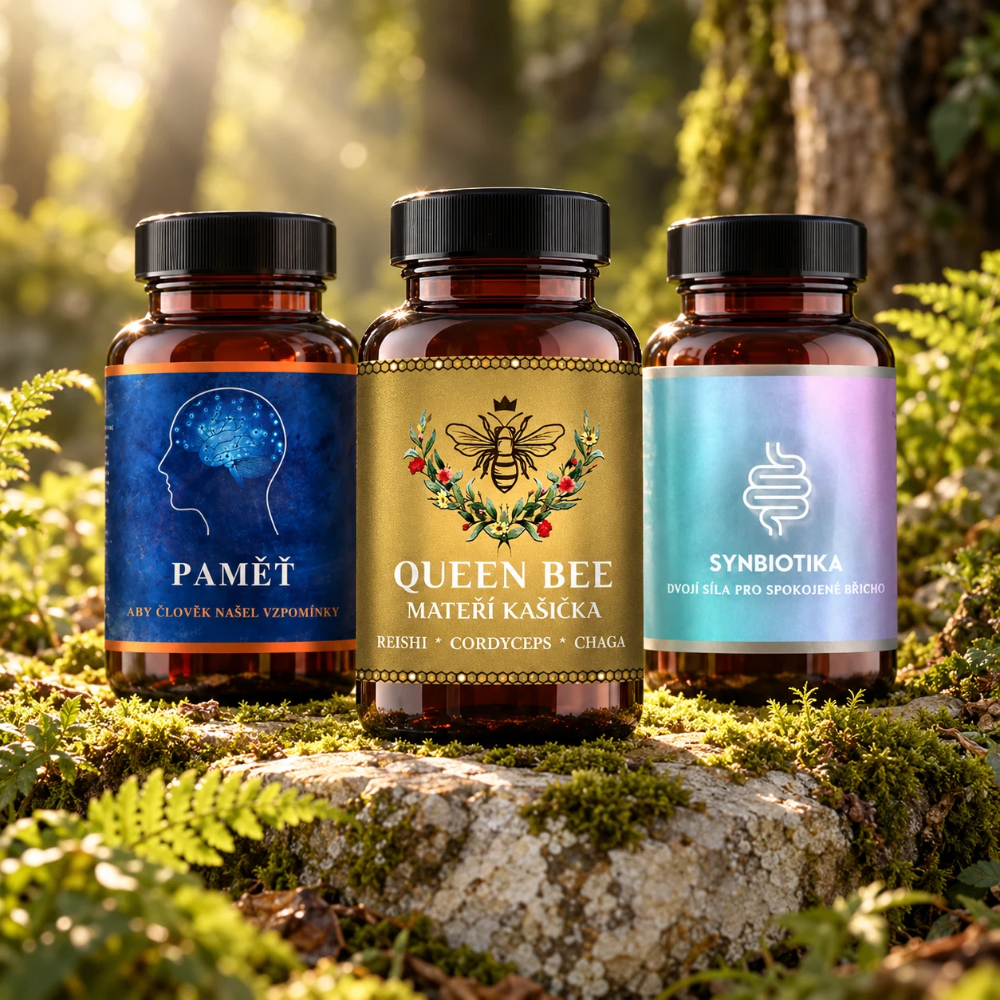

Podívejte se dovnitř.
U každého produktu najdete konkrétní složky a jejich množství na jednu tobolku. Věnujte pozornost i formě a balení.
Rostlinné komplexy, mikrobiální kultury i vitální houby. Poznejte, co je uvnitř, a najděte si svůj vlastní způsob.
Prozkoumat kolekci
LESNÍ ZÁPISNÍK / NAŠE KOLEKCE
Šest různých receptur.
Prozkoumejte jejich složení, formu
a doporučené použití.
Připravujeme kolekci…
Prohlížíte ukázkovou nabídku. Ceny vycházejí z dodaných podkladů, dostupnost není propojená se skladem. V náhledu nevzniká skutečná objednávka.
NEŽ SE ROZHODNETE
Nejprve poznat. Potom vybírat.
Bez zkratek, které by za vás rozhodovaly.
U každého produktu najdete konkrétní složky a jejich množství na jednu tobolku. Věnujte pozornost i formě a balení.
Doporučená denní dávka je součástí detailu. Před užíváním ji vždy porovnejte s aktuální etiketou výrobku.
Upozornění, alergeny a možné interakce patří k výběru. Při užívání léků nebo nejasnostech se poraďte s odborníkem.
NÁŠ PŘÍSTUP
Může začít u malé otázky: co si vlastně vybírám? Forest Vital je prostor pro přehlednou kolekci a informace, ke kterým se můžete vracet.
Věříme v pozorné čtení složení, srozumitelný popis a vlastní tempo. Každý produkt má své místo. Rozhodnutí zůstává na vás.
Blíž přírodě. S respektem k sobě.PRAKTICKY A OTEVŘENĚ
Otevřete detail produktu v kolekci. Složení na jednu tobolku, dávkování a upozornění jsou přímo u produktu. Před použitím vždy zkontrolujte aktuální etiketu.
Toto je funkční náhled e-shopu. Košík a objednávku si můžete vyzkoušet se smyšlenými údaji. Nic se neodesílá, nevzniká platba ani skutečná objednávka.
Nemusíte. Uložené produkty i košík zůstávají pouze v tomto prohlížeči. Uložit si produkt můžete srdíčkem na jeho kartě.
Dostupnost v tomto náhledu není propojená se skladem. Zobrazené ceny jsou převzaté z dodaných produktových podkladů.